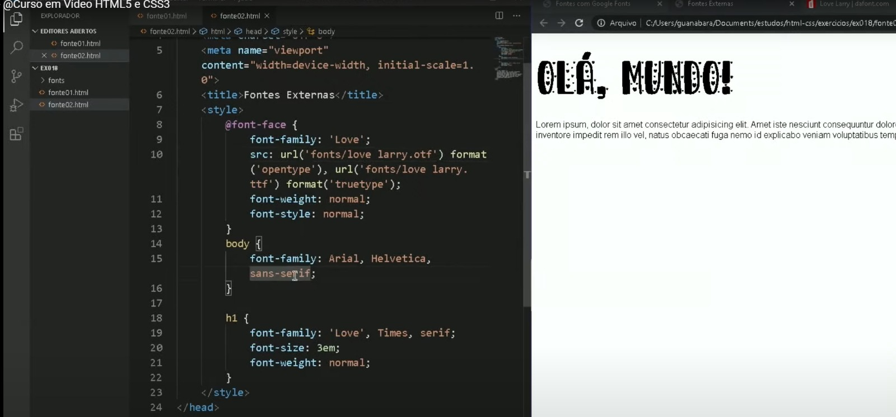

Caso o cliente não queira nenhuma fonte que tenha no fonts.google.com, ou queira pegar uma fonte mais tematizada, tem um outro site que se chama dafont.com e pode pegar lá.
Tomar cuidado ao pegar uma fonte pois você precisa saber se ela tem acentuação e se ela tem letras minúsculas. Ao escolher a fonte que você ou seu cliente deseja, desce a barra para saber se tem os glifos(letras) com acentuação.
Para adicionar essas novas fontes externas que você baixou, após você ter entrado no site e baixado elas, elas podem vir com alguns formatos diferentes.
Usamos a REGRA = @FONT-FACE no STYLE ou no CSS se for ter mais de um documento(página) e assim, vai abrir um campo com duas declarações que são FONT-FAMILY: ' ' ; e SRC: URL ( );. Mas vai ficar faltando a declaração(TAG) FORMAT(' ');. Veja como ficou o código ↓.
@font-face{
font-family: 'Super';
src: ulr( 'fonts/Super Crown.ttf') format('truetype');
font-size: normal;
font-style: normal;
}
Ali no Font-Family, você vai colocar um nickname
pois se você observar, ele não tem o mesmo nome do arquivo que está na declaração src: url(' Super Crown.ttf') então isso significa que você pode escolher. Mas minha orientação é deixe o nome parecido para ficar fácil de identificar/se lembrar.
../FONTS/ é o caminho(local) que se encontra o(s) arquivo(s). Mesma coisa quando se está pegando uma imagem. Se estiver na mesma pasta somente usar o font/.
SRC: URL (' Super Crown.ttf'), é onde a gente coloca o NOME EXATO QUE VEIO NO ARQUIVO AO BAIXA-LO junto com o ponto. Como diz o nome da própria tag(declaração), ali ele vai buscar o nome da fonte para poder colocar no seu documento.
FORMAT('truetype'); como o nome da declaração já diz, aqui é onde a gente vai colocar o formato do arquivo de fonte que nós estamos pegando. A mesma coisa que acontece quando a gente coloca um vídeo no nosso site, se lembra? Outra coisa, essa declaração não vem quando você coloca a regra @font-face. Tem que adiciona-la manualmente.
Os outros dois você já conhece. Iremos falar agora sobre os formatos de fonte: ↓
A GENTE NÃO DEIXA OS ARQUIVOS FONT JOGADOS NA PASTA PRINCIPAL, A GENTE CRIA UMA PASTA CHAMADA "FONTES"! E OBSERVE QUE COLOQUEI MAIS DE UM FORMATO PARA FUNCIONAR DEPENDENDO DO NAVEGADOR QUE NEM OS VÍDEOS/PICTURES/ÁUDIO!
OFT e TTF geralmente funciona em todos os navegadores.
Veja como ficou o do Guanaraba:
Guanaraba apresentou 3 sites para faicilitar no reconhecimento de fontes dentro de imagens. Somente dois funcionam e já deixei como favorito.
whatfontis.comVoltar para o outro documento que também fala sobre fontes Clique aqui.